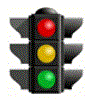
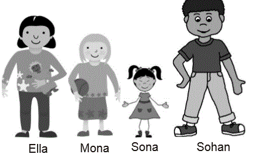
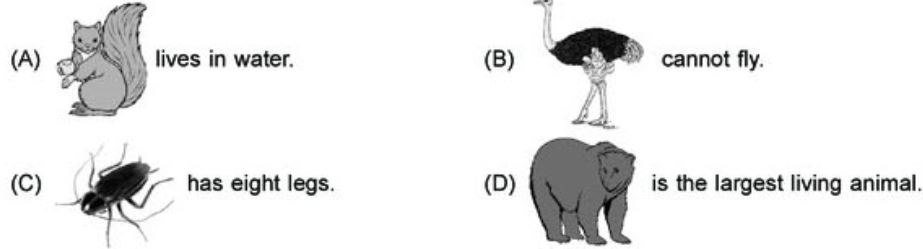
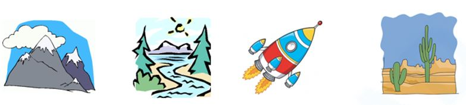
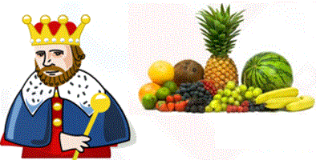
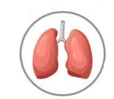
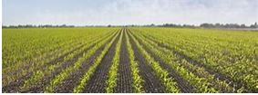
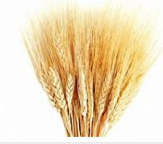

<!DOCTYPE html>
<html>
<head>
	<meta charset="UTF-8">
	<link href="../css/style_mock.css" rel="stylesheet" />
</head>
 <body>
<script type="text/javascript" src="../../mock_code.js"></script>
<script>

//todo - Read question from notepad
var questions = [
[" Identify the traffic light which allows you to go","Green","Yellow","Red","None","A"],
["Head : Brain :: Chest : _________.","Bones","Heart","Fingers","Skin","B"],
["Which of the following is not made up of plastic?","Chair","Pencil box","Bottle","Bulb","D"],
["Which of the following is the correct order from the tallest to the shortest? <BR>","Sohan, Ella, Mona, Sona","Sona, Sohan, Ella, Mona","Ella, Mona, Sona, Sohan ","Mona, Sona, Sohan, Ella","A"],
["Select the correct option- <BR>","A","B","C","D","D"],
["Which one is the property of non-living thing - ","Needs food and water to live","Can move","Can grow and die","Cannot move on their own","D"],
["All plants and animals are _____","Artificial things","Non-Living things","Living things","Man-made things","C"],
["Which of the following is man made thing - <BR>","Mountains","River","Rocket","Desert","C"],
["Take the hint from the two pictures and identify the fruit <BR>","Apple","Pinnaple","Mango","Orange","C"],
["Which one of the following is necessary for the growth of a plant?","Water","Injection","Medicine","None","A"],
["Identify the organ in following figure - <BR>","Kidneys","Intestines","Lungs","Brain","C"],
["Always walk on the  ____________ while walking on the road","footpath","queue","zebra","road","A"],
["Stop when the traffic light is ________.","White","Green","Red","Yellow","C"],
["____________ helps us to feel","Nose","Ears","Eyes","Skin","D"],
["A fruit have only one seed.","Water melon","Oranges","Mango","Kiwi","C"],
["Plants whose leaves we eat - ","Spinach","Potato","Onion","Garlic","A"],
["Food gives us _____________ to work","water","air","energy","none","C"],
["How many natural satellites Earth have","1","2","3","4","A"],
["We get vegetable and fruits from _________","Air","Earth","Plants","Water","B"],
["Eyes helps us to ________","smell","feel","see","none","C"],
["The Stem gives __________ to a plant","fruit","seed","support","weakens","C"],
["_____________ plant has weak stem","Potato","Grapevine","Tulip","Sugar cane","B"],
["Plants which are smaller in size and have soft stems are called - ","flowers","creepers","herbs","shrubs","C"],
["Identify the following - <BR>","Mountains","Farms","Jungle","Desert","B"],
["Identify the following corp - <BR>","Maize","Rice","Wheat","Corns","C"],
["Sun gives us - ","Night","Light","Heat","Both B & C","D"],
["You can find air in a ","football","tree","newspaper","pencil","A"],
["_______________ help bird to fly.","Legs","Tails","Wings","None","C"],
["Insects have __________ legs","4","6","3","5","B"],
["True or False <BR> A seed needs air, water and sunlight to grow","True","False","Both","None","A"],
["True or False <BR>Mango tree is a thin and straight trees","True","False","Both","None","B"],
["We should sleep for ________ hours everyday","9","10","8","6","C"],
["There are ________ sense organs in our body.","three","four","five","six","C"],
["Fruits with a hard cover are called ","seeds","jam","juice","nuts","D"],
["Kidney bean is a ","cereal","pulse","herbs","shrubs","B"],


]

</script>
<table><tr>
  <td class="timer-pic"></td><td class="timer-text"><p id="demo" ></p></td> 
</tr>
</table>
<h2 id="test_status"></h2>
<div id="test"></div>
</body>
</html>
